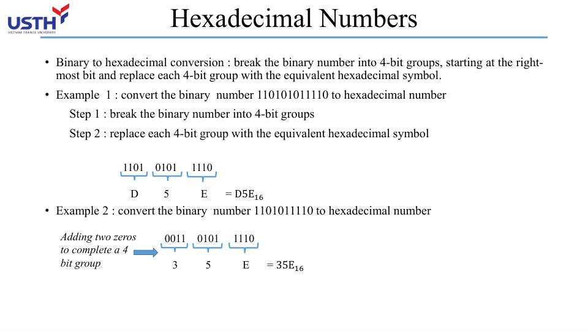
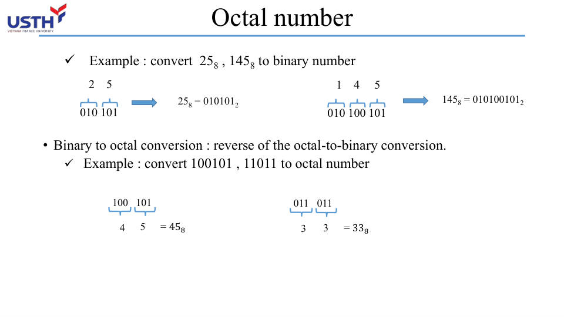
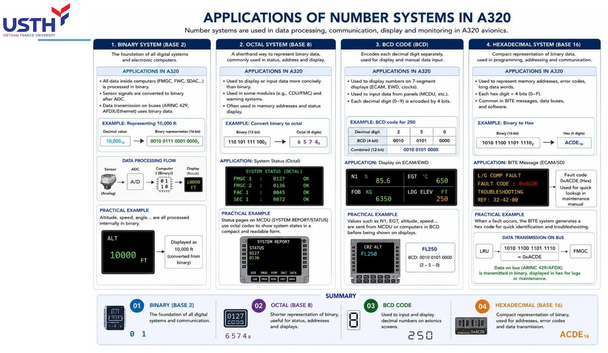
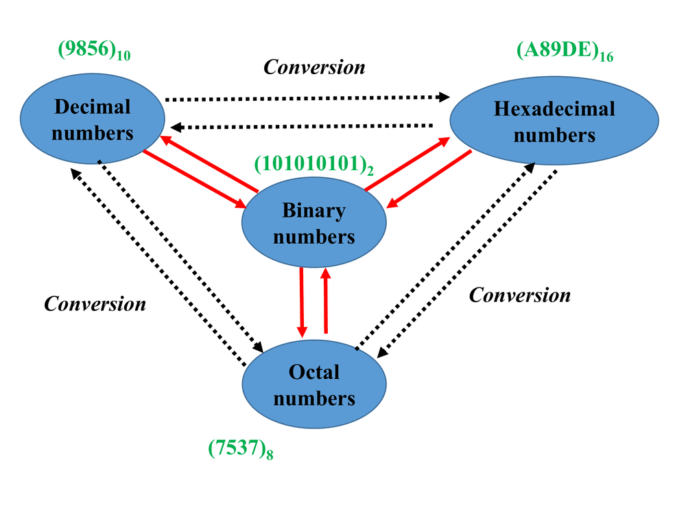
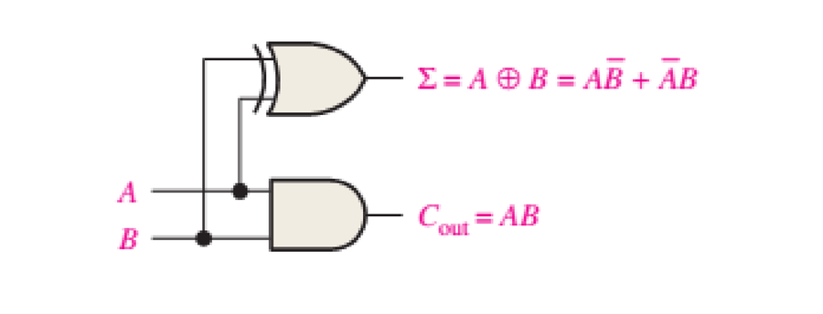
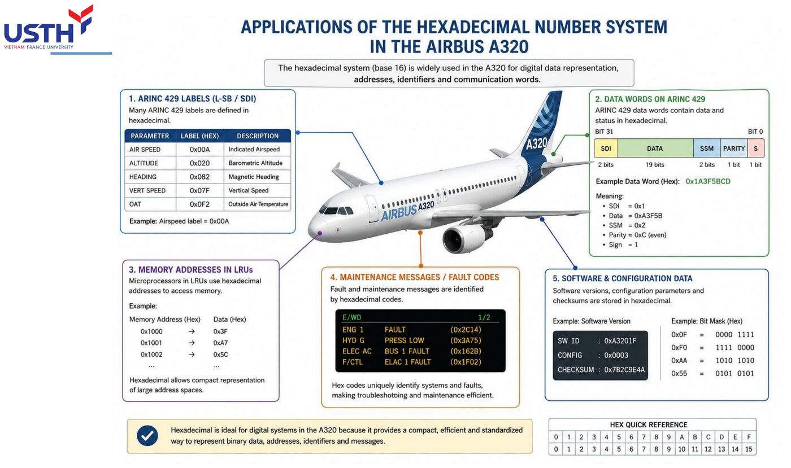
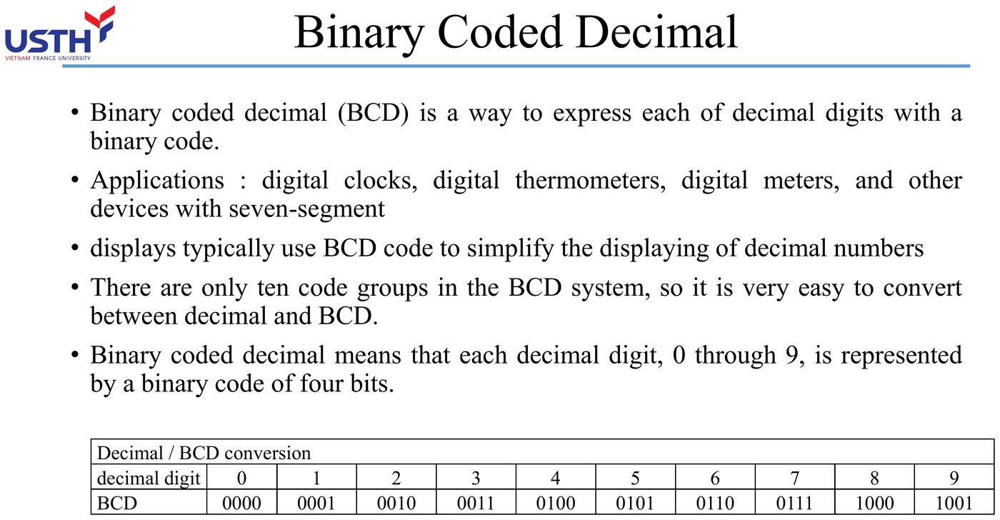
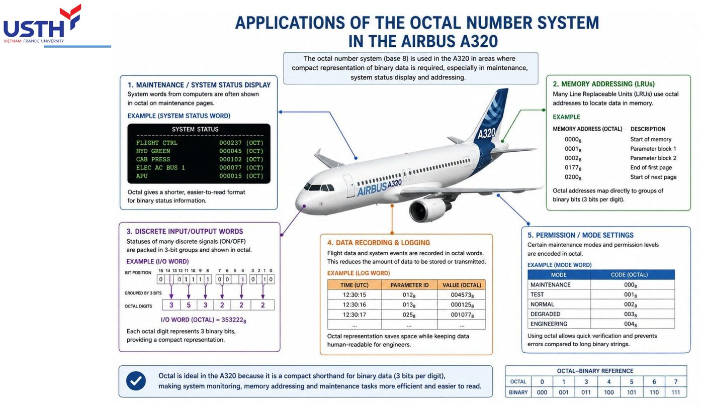

01. Number systems in aircraft digital data
All data inside aircraft computers (FMGC, FWC, SDAC…) is processed in binary, but humans need intermediate number systems (octal, hexadecimal, BCD) to read and enter data conveniently. This module rebuilds the four core number systems and their real applications on the Airbus A320.
CO/CLO: CO2Time (estimate): ≈ 3.9 lecture hours27 slidesQuestions: 87 (58 original)
Slide: Number system pp.1-27 · Tooley Ch.2 (p.25-38) · Floyd Ch.2 (p.65-124) · Book content map
Tooley: Ch.2 Number systems (p.25-38): decimal, binary, octal, hex, ASCII
Floyd: Ch.2 Number Systems, Operations, and Codes (p.65-124)
Near 1-to-1 match: both books devote exactly one chapter to these same four number systems.
- Why does an aircraft computer need several number systems?
- Binary numbers and conversion
- Octal and hexadecimal
- BCD and ASCII codes
- Application on the Airbus A320
📷 The lecturer's original slides (click to enlarge)
27 slides
 num·1
num·1 num·2
num·2 num·3
num·3 num·4
num·4 num·5
num·5 num·6
num·6 num·7
num·7 num·8
num·8 num·9
num·9 num·10
num·10 num·11
num·11 num·12
num·12 num·13
num·13 num·14
num·14 num·15
num·15 num·16
num·16 num·17
num·17

num·18 num·19
num·19 num·20
num·20 num·21
num·21 num·22
num·22 num·23
num·23

num·24 num·25
num·25 num·26
num·26 num·27
num·27Lecture
Why does an aircraft computer need several number systems?
- Review of the decimal system: the one humans use every day
- Binary: the foundation of every digital circuit
- Octal and hexadecimal: compact shorthand for binary
- BCD: the bridge between decimal digits and 7-segment displays
Why not just use decimal directly in electronic circuits?
Digital electronic circuits can only reliably distinguish two voltage levels (high/low), not ten distinct levels needed for decimal digits. Hardware is therefore forced into binary (2 levels); every other number system (octal, hex, BCD) is simply a human-friendly shorthand for that same binary string.
📖 Explanation for beginners
Picture a light switch: it has two states, on or off, and you can tell them apart instantly even if the voltage wobbles a little. Now picture a switch with ten notches for the digits 0 to 9. A bit of electrical noise or an aging component could make the circuit read notch 4 as notch 5.
That is why digital circuits are built to separate only two voltage levels (typically 0 V and 5 V). The wide gap between them tolerates noise well. Octal, hex and BCD, covered later, are not different ways of computing inside the hardware. They are shorthand that lets people write the same binary string more compactly.
Four core number systems in avionics
| System | Base | Digits used | Main role |
|---|---|---|---|
| Binary | 2 | 0,1 | Internal computer processing |
| Octal | 8 | 0-7 | Compact system status codes |
| Hexadecimal | 16 | 0-9,A-F | Memory addresses, BITE fault codes |
| BCD | n/a | 4 bits/digit | Decimal display on screens |

📖 Explanation for beginners
The image above comes from the original lecture slide. It summarises the four number systems in this module and the real job each one does on the A320. Binary is the internal language of every onboard computer (FMGC, FWC, SDAC). Octal shortens status codes on some older MCDU pages. Hex covers memory addresses and BITE fault codes because it is compact and easy to look up. BCD bridges the internal binary value to the familiar decimal digits on cockpit displays.
On a first pass, do not try to memorise every detail in the picture. Keep the main idea: four systems, four roles, all describing the same data underneath.
Positional weighting: the principle shared by every base
In any base-b system, the digit at position i (from the right, starting at 0) carries weight bⁱ. The value of the whole number equals the sum of (digit × weight).
📖 Explanation for beginners
This is the most general formula in the module and it works for any base, so read it slowly. "Positional weighting" means a digit's real value depends on where it sits. In 528, the digit 5 is worth 500, not 5, because it stands in the hundreds place.
The formula N = Σ dᵢ·bⁱ restates that in symbols. dᵢ is the digit at position i (counted from the right, starting at 0), b is the base, bⁱ is the weight of that position, and Σ means "add everything up". The next slide applies it to a familiar decimal number before we move to binary.
Example: applying positional weight to a familiar decimal number
528 (base 10) = 5·10² + 2·10¹ + 8·10⁰ = 500+20+8 = 528. This is exactly the same principle the course will re-apply to base 2, 8 and 16: only the value of b changes.

📖 Explanation for beginners
The example 528 = 5×10² + 2×10¹ + 8×10⁰ is just a formal spelling of the sum 500+20+8 that everyone learned in primary school. The only new thing is seeing that it matches the positional-weight formula.
The attached image shows that decimal is still what pilots and engineers see every day on EFIS, FMS and weight tables. The reason is simply that people count on ten fingers. Inside the computer, each of these numbers has already been converted to binary before any calculation, then converted back only so a human can read it.
Why technicians don't read raw long binary strings
A 16-bit memory address written in binary is 16 characters long (e.g. 1010110011110000), easy to mistype or misread a single bit. Rewritten in hex it is only 4 characters (ACF0): this reduces transcription error, a practical engineering reason, not just a theoretical one.
📖 Explanation for beginners
Compare the two forms. The binary string 1010110011110000 is 16 characters long. Misreading or mistyping just one bit in the middle ruins the whole address, and the eye struggles to spot the slip in a long run of look-alike 0s and 1s.
Written in hex, the same value is only 4 characters (ACF0). Fewer characters mean fewer chances to slip, and the eye tells 0-9 and A-F apart far more easily than a wall of 0s and 1s. This is a practical reason, not only a mathematical one, and it is why maintenance documents record addresses and fault codes in hex.
The four systems are not independent: constant conversion is required
- The computer PROCESSES in binary
- The display SHOWS the pilot BCD/decimal
- Maintenance logs RECORD fault codes in hex
- Some legacy status pages use octal
Maintenance engineers must be fluent converting in all four directions, not just one.

📖 Explanation for beginners
The triangle diagram shows that no number system stands alone. All four have two-way "Conversion" arrows linking them to the others, so engineers convert back and forth constantly.
In the figure, each system has its own sample number: (9856)₁₀, (101010101)₂, (7537)₈ and (A89DE)₁₆. These are four different numbers, shown only to illustrate that each system has its own digits, with the small subscript naming the base. The bullets beside the diagram state the real roles: computers process in binary, displays show BCD or decimal, maintenance documents record fault codes in hex, and a few legacy status pages use octal.
⚠️ Trap: confusing a 'number system' with a 'unit of measure'
Beginners often confuse 10₁₆ (sixteen, base 16) with 10 (ten, base 10) because the digits look identical. Always mark the base subscript explicitly, as Tooley's convention shows: (75)₈, (75)₁₀, (75)₁₆ are THREE completely different values despite sharing the digits '7','5'.
📖 Explanation for beginners
This is an easy trap: you see "10" and read "ten" out of habit. But 10₁₆ (read "one zero, base sixteen") is really sixteen, while 10₂ is two and 10₈ is eight.
The three numbers (75)₈, (75)₁₀ and (75)₁₆ look identical character by character, yet they stand for three different values: 61, 75 and 117 in decimal. The rule that saves you: always write the base subscript (₂, ₈, ₁₀, ₁₆) whenever a number is not in default decimal.
Application on the A320: why the FMGC must understand all four systems
The FMGC (Flight Management Guidance Computer) receives binary sensor data, computes internally in binary, but must OUTPUT hex for maintenance logs, BCD for the MCDU display, and sometimes octal for status codes: one processing chip constantly converts between these systems in real time.
📖 Explanation for beginners
The FMGC (Flight Management Guidance Computer) shows these four systems are not idle theory. It receives sensor data already digitised into binary and performs every internal calculation in binary, because that is the only language its processor understands.
When it must send results outward, it translates to suit the purpose: hex for maintenance logs, BCD for the pilot's MCDU display, and occasionally octal for some legacy status codes. One chip does this translation thousands of times per second, in real time.
Data flow diagram of a numeric value in the cockpit
Sensor (analog) → ADC → binary (processed inside FMGC/FWC) → re-encoded as BCD/hex → shown on EFIS/ECAM or logged by BITE. Every arrow in this chain is a point where the active number system must be correctly identified.
📖 Explanation for beginners
The diagram traces the life of one measured quantity, say air pressure. The sensor produces an analog signal (a smoothly varying voltage). The ADC (Analog-to-Digital Converter) turns it into a discrete binary string. The FMGC or FWC calculates entirely in binary. The result is then re-encoded as BCD or hex, depending on whether it goes to a display (EFIS/ECAM) or to a log (BITE).
Each arrow is a real conversion inside real hardware. If any step uses the wrong number system, the value the pilot sees ends up wrong too.
Quick self-check (ungraded)
Pause for 30 seconds: can you explain out loud why a maintenance engineer CANNOT learn just one number system and skip the other three? If unsure, revisit the first two slides before moving to Part 2.
📖 Explanation for beginners
Before Part 2, test yourself by answering aloud, in your own words and without the slides: why can't a maintenance engineer learn one number system and skip the other three?
A complete answer has three points. The computer inside always works in binary. The pilot's display shows easy-to-read decimal or BCD. Maintenance documents and fault logs use hex because it is compact and less error-prone to look up. If you can say all three fluently, you are ready for Part 2.
Binary numbers and conversion
- Bit weighting: MSB/LSB, powers of two
- Decimal ↔ binary conversion by repeated division/multiplication
- Two's complement for representing negative numbers
MSB, LSB and powers-of-two weighting
In a binary number, the leftmost bit is the MSB (Most Significant Bit: highest weight), the rightmost bit is the LSB (Least Significant Bit: weight 2⁰=1).
| 2⁷ | 2⁶ | 2⁵ | 2⁴ | 2³ | 2² | 2¹ | 2⁰ |
|---|---|---|---|---|---|---|---|
| 128 | 64 | 32 | 16 | 8 | 4 | 2 | 1 |
📖 Explanation for beginners
MSB (Most Significant Bit) is the bit with the largest weight and LSB (Least Significant Bit) is the bit with the smallest. They play the role of the "hundreds place" and the "units place" in a decimal number. In 110100, the leftmost bit (MSB) has weight 2⁵ = 32 and the rightmost bit (LSB) has weight 2⁰ = 1.
The table of powers of two (1, 2, 4, 8, 16, 32, 64, 128) is the multiplication table of binary. Learn these eight values and every binary-to-decimal conversion on the following slides becomes quick.
Worked example: binary → decimal
Convert 11011010₂ to decimal: sum the weights of bits that are 1:
11011010 = 128+64+0+16+8+0+2+0 = 218
(This is Tooley's own worked example: only add weights where the bit is 1, skip positions with 0.)
📖 Explanation for beginners
The rule fits on one line: add the weights of positions holding a 1 and skip positions holding a 0. Do not subtract or multiply, just leave those positions out.
In 11011010, the positions holding 1 carry weights 128, 64, 16, 8 and 2. The two positions holding 0 (weights 32 and 1) are skipped. The sum is 128+64+16+8+2 = 218. A quick check: count the 1-bits in the original string (five here) and count the terms you added. If the counts differ, you skipped or double-counted a weight.
Worked example: decimal → binary by repeated division
Convert 45 to binary by repeatedly dividing by 2, reading remainders bottom-up:
| Division | Quotient | Remainder |
|---|---|---|
| 45÷2 | 22 | 1 |
| 22÷2 | 11 | 0 |
| 11÷2 | 5 | 1 |
| 5÷2 | 2 | 1 |
| 2÷2 | 1 | 0 |
| 1÷2 | 0 | 1 |
Reading remainders bottom-up: 101101 (matches the result independently verified in notebook 01).
📖 Explanation for beginners
This method runs opposite to the previous slide. Instead of adding weights, divide the decimal number by 2 again and again, noting the remainder (always 0 or 1) each time, and stop when the quotient reaches 0.
For 45: 45÷2 = 22 r 1; 22÷2 = 11 r 0; 11÷2 = 5 r 1; 5÷2 = 2 r 1; 2÷2 = 1 r 0; 1÷2 = 0 r 1. The usual slip is the reading order: read the remainders bottom to top to get 101101, because the first remainder is the least significant bit and the last is the most significant.
A faster shortcut: sum weights 2ⁱ directly (no division needed)
45 = 32+8+4+1 → mark 1 at exactly those four weight positions (32,8,4,1), 0 elsewhere → 101101. This shortcut is faster by hand, but the division method on the previous slide is the GENERAL method that also works for octal/hex.
📖 Explanation for beginners
This shortcut also reverses binary-to-decimal: we look for the weights that add up to the given number. For 45, subtract the largest weight that still fits: 45-32 = 13, 13-8 = 5, 5-4 = 1, 1-1 = 0. So the weights 32, 8, 4 and 1 get a 1, while 64, 16 and 2 get a 0, giving 101101, the same as the previous slide.
It is fast for small numbers done in your head. Repeated division is the reliable method that never skips a step, especially for large numbers or under exam pressure.
Binary addition: the carry rule
Example: 0110 + 0101 = 1011 (6+5=11: cross-check in decimal to confirm the carry rule was applied correctly).

📖 Explanation for beginners
The binary addition table has only four cases (the decimal table has 100): 0+0 = 0, 0+1 = 1, 1+0 = 1, and the special case 1+1 = 10, read as "write 0, carry 1", just like "9+1 = 10, write 0 carry 1" in decimal.
The circuit that performs exactly this addition is the half adder. The figure shows it needs only two gates: an XOR gate giving the sum Σ = A⊕B (the result before any carry) and an AND gate giving the carry Cout = AB. The AND gate outputs 1 only when both inputs are 1, matching the fact that 1+1 is the only case that produces a carry. You will meet XOR and AND again in Module 02.
Negative numbers in binary: why two's complement is needed
Pure binary has no minus sign. Negative numbers are represented using two's complement: invert every bit, then add 1. This is how a CPU performs subtraction using only an adder circuit.
📖 Explanation for beginners
Ordinary arithmetic puts a minus sign in front of a negative number. Electronic circuits have only two voltage levels (0 and 1), with no third level left over to stand for a sign.
CPU designers solved this with two's complement, a bit transformation built so that adding a number to another number's two's complement gives exactly the result of subtraction. A CPU therefore needs only one adder circuit to do both addition and subtraction, which saves a good deal of hardware inside the chip.
Worked example: two's complement of 10110
Step 1: invert bits: 10110 → 01001.
Step 2: add 1: 01001 + 1 = 01010.
(Matches the original Tooley Ch.2 Q3: see the Module 01 quiz.)
📖 Explanation for beginners
Two's complement takes two steps, in order. Step 1: invert every bit (0 becomes 1, 1 becomes 0), so 10110 becomes 01001. Step 2: add 1, so 01001 + 1 = 01010. Therefore 01010 is the two's complement of 10110, meaning the matching negative value.
You can check it without a table: add the original to the result, 10110 + 01010 = 100000. Drop the overflow bit and you get 00000, which confirms the answer, since a number plus its own negative must equal zero.
⚠️ Trap: forgetting the '+1' step after inverting
The most common error is inverting the bits and STOPPING there: that is one's complement, not two's complement. Always verify by adding the original number to its two's complement: if the sum overflows past the original bit width (e.g. 10110+01010=100000, drop the overflow bit → 00000), the result is correct.
📖 Explanation for beginners
This is the most common mistake when learning two's complement: performing only Step 1 (inverting the bits) and stopping, believing the job is done. That result is one's complement, a different concept that most modern systems do not use for negative numbers.
The one's complement of 10110 is just 01001, while the correct two's complement is 01010. To catch a forgotten +1, always run the addition check from the previous slide. If the sum is not zero after dropping the overflow bit, you almost certainly forgot to add 1.
Application on the A320: why the ADIRU outputs signed binary data
The ADIRU (Air Data Inertial Reference Unit) must represent both positive values (climbing altitude) and negative values (decreasing speed/negative pitch angle): two's complement lets the FMGC add/subtract these using a single adder circuit, with no separate subtractor needed.

📖 Explanation for beginners
The ADIRU (Air Data Inertial Reference Unit) measures values that can rise or fall continuously in flight: altitude rising in the climb, airspeed dropping under braking, pitch angle positive or negative. Without two's complement the system would need one adder for positive values and a separate subtractor for negative ones, doubling the hardware.
With two's complement, the FMGC needs just one binary adder to handle both directions of every flight value. The attached image shows how all A320 sensor data follows this binary principle.
Quick self-check (ungraded)
Try mentally: what is the two's complement of the 4-bit binary number 0110? (Hint: invert to 1001, add 1 → 1010.) If you got something else, review the two-step process above.
📖 Explanation for beginners
Try this before Part 3: find the two's complement of the 4-bit number 0110 without looking at the hint. Recall the two steps: invert the bits (0110 becomes 1001), then add 1 (1001 + 1 = 1010).
If you got 1010, check it by addition: 0110 + 1010 = 10000, drop the overflow bit and you have 0000, as expected. If you got something else, you probably stopped at the inversion step (1001) and forgot the +1, which is exactly the trap on the previous slide. Review that slide and try again.
Octal and hexadecimal
- Group of 3 bits ↔ 1 octal digit, group of 4 bits ↔ 1 hex digit
- Applications: system status codes (octal), memory addresses/BITE fault codes (hex)
Why octal groups 3 bits and hex groups 4 bits
2³=8, so each octal digit represents exactly 3 bits; 2⁴=16, so each hex digit represents exactly 4 bits. This is NOT an arbitrary convention: it follows directly from the definition of the base itself.
📖 Explanation for beginners
The answer lies in exponents. 2³ = 8 means 3 bits can represent exactly 8 values (000 to 111), which matches the 8 octal digits (0 to 7). So each octal digit corresponds to exactly 3 bits. Likewise 2⁴ = 16 matches the 16 hex symbols (0-9 and A-F), so each hex digit corresponds to exactly 4 bits.
This is not an arbitrary convention but a mathematical consequence. Grouping the wrong number of bits, say 3 bits mapped to a hex digit, gives a wrong conversion immediately.
Quick reference table: binary ↔ hex (must be memorised)
| Hex | Binary | Hex | Binary |
|---|---|---|---|
| 0 | 0000 | 8 | 1000 |
| 1 | 0001 | 9 | 1001 |
| 2 | 0010 | A | 1010 |
| 3 | 0011 | B | 1011 |
| 4 | 0100 | C | 1100 |
| 5 | 0101 | D | 1101 |
| 6 | 0110 | E | 1110 |
| 7 | 0111 | F | 1111 |
📖 Explanation for beginners
This table is the most important tool in Part 3. It lists all 16 hex values with their exact 4-bit patterns. Because each hex digit always maps to one fixed 4-bit pattern, you convert by lookup with no further calculation. That is why binary-to-hex is faster and less error-prone than going through decimal.
A practical tip: copy the table by hand a few times until you remember A=1010, B=1011, C=1100, D=1101, E=1110 and F=1111. Those six values are where beginners slip most often.
Worked example: binary → octal by grouping 3 bits
Convert 100010001₂ to octal: group from the right in 3s: 100 | 010 | 001 → 4 2 1 → 421₈. (Matches Tooley Ch.2 Q8.)
📖 Explanation for beginners
The group-in-3s procedure applies the 2³ = 8 principle from the first slide of this part. Split 100010001 into groups of 3 bits, starting from the right: 100 | 010 | 001. Look each group up in the octal table (000 = 0, 001 = 1, 010 = 2, ..., 111 = 7) to get 4, 2, 1 and join them as 421₈.
The most common mistake is grouping from the left. Every group is then misaligned and the answer is wrong, especially when the bit count is not divisible by 3 (see the padding slide later).
Worked example: hex → octal MUST go through binary
111₁₆ → expand each hex digit to 4 bits: 1→0001, 1→0001, 1→0001 → 000100010001₂.
Regroup in 3s from the right: 000 100 010 001 → 4 2 1 → 421₈. You cannot infer hex→octal directly, skipping this step.
📖 Explanation for beginners
There is no single-step formula from hex to octal. You always go through binary, in two stages.
Stage 1: expand each hex digit to exactly 4 bits: 1→0001, 1→0001, 1→0001, joined as 000100010001. Stage 2: regroup that string in 3s from the right: 000 100 010 001, which reads 4, 2, 1, so 421₈. If you try to guess "which octal digit matches hex F" and skip the binary step, you will almost always be wrong, because the two systems have no simple divisibility relationship.
Worked example: binary → hex by grouping 4 bits
Convert 10110011₂ to hex: group in 4s: 1011 | 0011 → B | 3 → B3₁₆. (Matches Tooley Ch.2 Q11.)
📖 Explanation for beginners
Grouping in 4s for hex works exactly like grouping in 3s for octal, only the group size changes. Split 10110011 into two 4-bit groups from the right: 1011 | 0011. Look up the hex table to get B (1011) and 3 (0011), joined as B3₁₆.
A memory aid: B is one step after A = 10, so B = 11 = 1011 in binary. With practice you will stop needing the table. Always group from right to left, the same caveat as on the 3-bit slide.
Padding with leading zeros when bit count isn't divisible
Convert 111001110₂ (9 bits) to octal: 9 is already divisible by 3, so group directly: 111 001 110 → 7 1 6 → 716₈. Always count the bits first and pad with LEADING zeros if the count is not a multiple of the group size.
📖 Explanation for beginners
Before grouping bits, always count the total number of bits to see whether padding is needed: octal needs a multiple of 3, hex needs a multiple of 4. With 111001110 (exactly 9 bits, already a multiple of 3) group directly: 111 001 110, which reads 7, 1, 6, so 716₈.
If the count does not divide evenly, say 7 bits grouped by 3, add zeros on the left, not the right. Leading zeros never change a value, just as 007 equals 7 in decimal. Zeros added on the right would change the value completely.
Why hex dominates over octal in modern systems
Most modern data buses (8/16/32-bit) are multiples of 4, so hex groups fit exactly with no padding, while octal (groups of 3) often misaligns with common bus widths. This is why hex dominates modern maintenance documentation over octal.
📖 Explanation for beginners
Most data buses in modern computers and avionics are 8, 16 or 32 bits wide. These are multiples of 4, so they split into hex digits with nothing left over, but they are not always multiples of 3. A 16-bit register splits into exactly 4 hex digits, while splitting it into octal digits leaves one stray bit that needs padding, which is a nuisance when programming or reading logs.
This practical reason explains why hex gradually replaced octal in modern technical and maintenance documents, although octal survives in a few legacy systems.
⚠️ Trap: adding/subtracting hex digits as if they were decimal
Never add '9'+'9'=18 and write '18' into a hex result: hex only has 16 symbols (0-F). 9+9=18 (decimal) = 12₁₆, written as digit 2 with a carry of 1. Convert through decimal to add if you are not yet fluent with the hex addition table.
📖 Explanation for beginners
People used to decimal arithmetic can carry that habit into hex, adding 9+9 to get 18 and writing "18" straight into the answer. But hex has only 16 symbols (0-9 and A-F), and there is no symbol "18".
The right way: 9+9 = 18 in decimal, and 18 in hex is 12₁₆ (since 18 = 16+2). So write the digit 2 in that column and carry 1 to the next column on the left, the same carry principle as binary addition. Until the hex addition table feels natural, the safe approach is to convert the hex digits to decimal, add, and convert the result back to hex.
Application on the A320: BITE fault codes are always shown as 4-digit hex
A fault code such as 0xACDE corresponds to exactly 16 bits of binary (4 hex digits × 4 bits). Technicians looking it up in the AMM don't need to count 16 individual bits: matching 4 hex characters is enough, drastically reducing misreading compared with a long binary string.

📖 Explanation for beginners
BITE (Built-In Test Equipment) is the subsystem that detects faults on the aircraft automatically. Every fault code it produces is written as 4 hex characters, for example 0xACDE, because 4 hex characters match exactly 16 bits, enough to encode tens of thousands of fault types without a long string of digits.
When looking the code up in the AMM (Aircraft Maintenance Manual), the technician only has to match 4 hex characters, which is much faster and less error-prone than counting and comparing 16 bits by eye. The attached image shows the whole chain of real uses: memory addresses, ARINC 429 data labels and maintenance fault codes, all in hex for the same reason.
Quick self-check (ungraded)
Without a calculator: what is 2F₁₆ in binary? (Hint: 2→0010, F→1111 → 00101111.) Check against the reference table at the start of this part if unsure.
📖 Explanation for beginners
Self-check: convert 2F₁₆ to binary with no calculator and no table. Split the hex digits, turn 2 into 0010, turn F into 1111 (F is the largest hex value, so every bit is set), and join the two groups in order: 00101111.
If you got a different answer, return to the quick-reference table at the start of Part 3 to find which group you remembered wrongly, then try a similar example until you can do it without the table.
BCD and ASCII codes
- BCD: each decimal digit → its own 4-bit group
- BCD on MCDU input panels and 7-segment displays
- ASCII: character encoding for text data exchange
How is BCD different from pure binary?
Pure binary converts the WHOLE number at once; BCD converts EACH decimal digit separately into 4 bits. BCD therefore always uses more bits than pure binary for the same value, in exchange for a trivially simple conversion to 7-segment display.
📖 Explanation for beginners
The core difference is what unit gets converted. Pure binary treats the whole number as one block and converts it once (45 becomes 101101). BCD splits the number into decimal digits and converts each digit into 4 bits.
For 45, pure binary gives 101101 (6 bits) while BCD gives 0100 0101 (8 bits, built from 4→0100 and 5→0101). So BCD always spends more bits on the same value. In exchange, a 7-segment display needs only a simple decoder per 4-bit group, whereas pure binary would need a much more complex circuit to split the value back into decimal digits.
Conversion table: 10 decimal digits ↔ BCD
| Digit | BCD | Digit | BCD |
|---|---|---|---|
| 0 | 0000 | 5 | 0101 |
| 1 | 0001 | 6 | 0110 |
| 2 | 0010 | 7 | 0111 |
| 3 | 0011 | 8 | 1000 |
| 4 | 0100 | 9 | 1001 |
📖 Explanation for beginners
The table lists just 10 combinations, one per decimal digit. The hex table in Part 3 had 16. This is the core difference between BCD and hex, and it returns on the "trap" slide later.
The table is easy to learn because it matches ordinary binary counting from 0000 to 1001, only stopping earlier. Plain 4-bit binary counts up to 1111 = 15, while BCD stops at 1001 = 9. Remembering that stopping point is the fastest way to tell whether a pattern is valid BCD.
Worked example: decimal → BCD
Convert 37 to BCD: encode each digit separately: 3→0011, 7→0111 → concatenate 00110111. (Matches Tooley Ch.2 Q5.)
📖 Explanation for beginners
The procedure has one step: split the decimal digits apart, then convert each digit to 4 bits using the table on the previous slide. No calculation like converting to pure binary is needed.
For 37: digit 3 becomes 0011 and digit 7 becomes 0111. Join them in the original order (tens first, then units) to get 00110111. Note that this is not converting 37 to pure binary, which would give 100101, only 6 bits. The two conversions serve different purposes, so do not mix them up.
Worked example: BCD → decimal
Convert 10010001 (BCD) to decimal: split into 4-bit groups from the right: 1001 | 0001 → 9 | 1 → 91. (Matches Tooley Ch.2 Q4.)
📖 Explanation for beginners
This reverses the previous slide. Starting from a BCD bit string, first split it into groups of exactly 4 bits from the right, the same grouping used for hex. Then look up each group to get one decimal digit.
For 10010001: split into 1001 | 0001, look up 9 and 1, and join them in order to get 91. If you meet a group outside 0000 to 1001 while splitting (for example 1010 or 1111), the string is not valid BCD. The next slide says more about those patterns.
The 6 invalid BCD combinations
4-bit BCD has 16 possible patterns (0000-1111) but only 10 (0000-1001) are valid. The six patterns 1010-1111 do NOT correspond to any decimal digit: if a BCD decoder circuit encounters these, it signals a hardware fault or data corruption.
📖 Explanation for beginners
With 4 bits you can form 2⁴ = 16 patterns (0000 to 1111), but BCD uses only the first 10 (0000 to 1001) for the 10 decimal digits. The remaining six patterns (1010, 1011, 1100, 1101, 1110, 1111) mean nothing in BCD.
This is not harmless. If a BCD circuit, such as a 7-segment decoder, receives one of those "garbage" patterns, something is definitely wrong: a hardware fault, signal noise or corrupted data in transit. Many onboard self-test systems (BITE) exploit exactly this property to detect corrupted BCD data.
ASCII: encoding characters, not encoding a quantity
Standard ASCII uses 7 bits, representing 128 characters (letters, digits, punctuation, control characters). Note: the ASCII code for the character '5' (0110101₂ = 35₁₆) is COMPLETELY DIFFERENT from the binary number representing the value 5 (00000101₂): these are two independent encoding concepts.
📖 Explanation for beginners
Two concepts are often mixed up. Encoding a quantity (binary, BCD) says how much. Encoding a character (ASCII) says which letter, text digit, punctuation mark or control command it is.
Standard ASCII uses 7 bits, enough for 2⁷ = 128 characters: upper and lower case letters, digits and invisible control characters such as newline and tab. The point that trips people most: the ASCII code for the character '5' is 0110101₂, quite different from the binary number for the value 5, which is 00000101₂. One describes a symbol to display, the other a quantity to calculate with.
Example: the ASCII code for the letter 'A'
'A' = 65 (decimal) = 41₁₆ = 1000001₂. The text string 'TCAS' is transmitted as 4 consecutive ASCII bytes, not as a single number.
📖 Explanation for beginners
A concrete example for the character 'A': its ASCII code is 65 in decimal, 41₁₆ in hex and 1000001₂ in binary (exactly 7 bits under the ASCII standard).
When a system transmits the string 'TCAS' (Traffic Collision Avoidance System), it does not send one number for the whole word. It sends 4 separate ASCII bytes, one each for T, C, A and S. That is why raw data in a debugging tool may show the hex sequence 54 43 41 53, and you need to recognise it as the text 'TCAS' rather than a single binary number.
⚠️ Trap: confusing BCD with hex when looking at an isolated 4-bit group
Both BCD and hex group data in 4 bits, which is easy to confuse. The key difference: hex has all 16 valid 4-bit values (0-F), while BCD only has 10 valid values (0-9): always ask what the context is (an address/hex value, or a decimal digit/BCD) before interpreting a 4-bit group.
📖 Explanation for beginners
BCD and hex both group data in 4-bit clusters, so at a glance they are easy to confuse. The group 0111 reads as 7 either way, so no problem shows up. Try 1100 instead: it is a valid 'C' in hex but an invalid pattern in BCD.
The core distinction: hex has all 16 values valid (0 to F), while BCD has only 10 valid values (0 to 9), and the other six are garbage. The safe rule: before interpreting a 4-bit group, always find the context in the accompanying documentation (an address in hex, or a BCD digit), and never guess from the bit pattern alone.
Application on the A320: why the MCDU keypad enters data in BCD
When a pilot types an altitude/speed on the MCDU, the keypad generates a BCD code for each keystroke: the CPU only needs to split 4-bit groups to know each digit exactly, far simpler than decoding one large binary number and then splitting it back into decimal digits.

📖 Explanation for beginners
When a pilot types a number on the MCDU (Multi-purpose Control and Display Unit) keypad to enter an altitude or speed, each digit key produces the BCD code of that exact digit. The whole number is not encoded into pure binary at the start.
The practical benefit: the processor only has to split the 4-bit groups to know exactly which digit was typed. That is much simpler than receiving one large binary number and running an algorithm to split it back into decimal digits. The attached image shows the process: the pilot enters 350 on the MCDU, and each digit is BCD-encoded (3→0011, 5→0101, 0→0000).
Quick self-check (ungraded)
What is 68 (decimal) in BCD? (Hint: 6→0110, 8→1000.) Compare your answer with the practice question bank at the bottom of the page after trying it yourself.
📖 Explanation for beginners
Practice: convert 68 (decimal) to BCD without looking at the table. Split the digits 6 and 8, convert each (6→0110, 8→1000), and join them in order (tens first) to get 01101000.
This is the last exercise of Part 4 before the multiple-choice questions at the bottom of the page. If you finish it fluently, you have covered all four theory parts (decimal, binary, octal and hex, BCD and ASCII) and are ready for Part 5, which ties everything together with real A320 examples.
Application on the Airbus A320
- ARINC 429 bus data is transmitted in binary, logged/displayed in hex
- ECAM/EWD display BCD-coded N1, EGT, altitude
- BITE fault codes are shown in hex (e.g. 0xACDE)
The full picture: how many number systems does one altitude value pass through?
Barometric sensor (analog) → ADC → 16-bit binary inside the ADIRU/FMGC → BCD-encoded for the PFD display → possibly logged in hex if a sensor fault occurs. A SINGLE physical quantity (altitude) passes through at least 3 different number systems before reaching the pilot's/engineer's eyes.
📖 Explanation for beginners
This slide ties the four earlier parts into one story. Follow a single altitude value from birth to display. A barometric sensor produces a continuous analog signal. The ADC samples it and digitises it into a 16-bit binary string. Inside the ADIRU and FMGC that string is calculated and corrected. Finally the result is re-encoded as BCD so the PFD (Primary Flight Display) can show familiar digits to the pilot.
If a sensor fault occurs, the system also records a hex-coded log entry for engineers to look up later. One physical value, at least three number systems.
Worked example: 10,000 ft as a 16-bit binary value
10,000 (decimal) → binary using the repeated-division-by-2 method learned in Part 2: 10000, 5000, 2500, 1250, 625, 312, 156, 78, 39, 19, 9, 4, 2, 1, 0. Reading the remainders bottom-up and zero-padding to 16 bits gives 0010011100010000₂. This is the raw data the FMGC processes internally.
📖 Explanation for beginners
This exercise reuses the repeated division by 2 from Part 2: convert 10,000 (feet) to binary. The 16-bit result is 0010011100010000, zero-padded at the front because aircraft computer registers usually have fixed widths that are multiples of 8.
A quick hex check: grouping in 4s gives 0010 | 0111 | 0001 | 0000, which is 2710₁₆, and 2710₁₆ = 2×4096 + 7×256 + 1×16 = 10,000. This bit string is the raw data the FMGC stores and computes with, quite unlike the familiar 10,000 on the display, which was re-encoded to BCD before being shown.
Example: ARINC 429 bus data shown in hex in maintenance logs
A 32-bit ARINC 429 data word, when logged for maintenance, is shortened to 8 hex characters instead of 32 binary characters: engineers read the log far faster, a direct real application of the hex conversion learned in Part 3.
📖 Explanation for beginners
ARINC 429 is a widely used avionics data standard in which each data word is exactly 32 bits. Writing all 32 binary characters into a maintenance log would fill a page with hard-to-read 0s and 1s.
So the system groups the bits in 4s (the principle from Part 3) and shortens them to 8 hex characters. Engineers read 8 hex characters far faster than they can count and compare 32 bits, and misread them less often. This is the practical reason given in Part 1 on why technicians do not read long binary strings.
Example: EGT shown as BCD on the ECAM
Engine exhaust gas temperature (EGT), e.g. 650°C, is BCD-encoded (6-5-0) before being sent to the 7-segment display driver on the ECAM: exactly the BCD→7-segment principle learned in Part 4, avoiding a complex binary-to-decimal decoder.
📖 Explanation for beginners
EGT (Exhaust Gas Temperature) is a perfect example of BCD driving a 7-segment display. The value 650°C splits into three digits 6, 5, 0, each converted to BCD (6→0110, 5→0101, 0→0000). Each 4-bit group goes straight into a simple 7-segment decoder that lights the right segments on the ECAM screen.
If the system used pure binary here, a far more complex circuit would be needed to split one binary number back into decimal digits. That is why BCD remains popular for displays despite using more bits.
Summary table: which number system is used where on the A320
| Location in the system | Number system |
|---|---|
| Internal processing in FMGC/FWC/SDAC | Binary |
| EGT, N1, altitude display on ECAM | BCD |
| BITE fault codes, maintenance logs | Hex |
| Some legacy status pages (MCDU STATUS) | Octal |
📖 Explanation for beginners
The table collects the four conclusions from the four earlier parts so you can see the whole picture. Binary handles all internal calculation because the hardware understands only two voltage levels. BCD is used when familiar figures (EGT, N1, altitude) must be shown to pilots. Hex serves fault codes and maintenance logs because it is compact and low-error to look up. Octal survives only on some legacy status pages.
Treat the table as a quick lookup map. When you meet an unfamiliar number in technical documents, first identify where in the system it appears, and you can infer which number system is probably in use.
Why maintenance staff cannot round off when reading hex
Unlike a decimal value (where rounding is often acceptable), a hex fault code read WRONG BY EVEN ONE CHARACTER (e.g. looking up 0xACDE instead of 0xACDF) leads to a COMPLETELY WRONG AMM lookup: there is no concept of 'close enough' when working with system hex codes.
📖 Explanation for beginners
With an ordinary decimal value, rounding 250.4 to 250 rarely causes real harm. A hex fault code is different. If an engineer misreads 0xACDE as 0xACDF (one final character off), the AMM lookup could point to two entirely different faults.
The result is the wrong part repaired, lost time and money, and, most importantly, the real fault left unfixed. That is why maintenance procedures require copying a hex code exactly and completely, with no estimating or rounding.
⚠️ Trap: misreading byte order (endianness) when assembling hex
Some systems log data in reversed byte order (little-endian) compared with the intuitive reading order (big-endian). Before concluding a hex fault code's meaning, ALWAYS check that specific system's AMM for the byte order it specifies: never assume a default.
📖 Explanation for beginners
"Endianness" is the order in which the bytes of a multi-byte value are stored or sent. Big-endian stores the most significant byte first, which matches the way people naturally read. Little-endian stores the least significant byte first, which feels backwards.
If an engineer used to reading big-endian assumes that order while the system logs in little-endian, joining the hex bytes in the wrong order produces a fault code very different from the real one, and the AMM lookup goes wrong as on the previous slide. The safe rule: never assume a byte order. Check the documentation of the specific system you are working on.
Extra case: octal conversion for a legacy STATUS page
Some older-generation MCDUs display the STATUS PAGE using a 3-digit octal code. For example, code 657₈ corresponds to binary 110101111₂: the engineer must regroup by 3 bits, exactly as learned in Part 3, to correctly look up the status meaning.

📖 Explanation for beginners
Although hex has replaced octal in most modern systems, some older MCDUs still show status codes in octal, a holdover from designs decades old. The attached image shows this kind of octal use on the A320.
For the code 657₈, use the octal-to-binary table already learned (6→110, 5→101, 7→111) and join the groups to get 110101111₂, the actual bit string the system handles inside. The practical lesson: engineers working on older aircraft still need fluency in both octal and hex.
Why this is the FOUNDATION module for everything that follows
Module 02 (logic gates) will reuse binary truth tables; Module 03 (multiplexers) will use binary/hex channel-select addresses; Module 04 (CPU) will use hex memory addresses and binary opcodes. Mastering all four number systems here is a prerequisite for correctly understanding the next three modules.
📖 Explanation for beginners
A look ahead. Module 02 on logic gates will constantly use truth tables written in 0s and 1s to describe the inputs and outputs of AND, OR and NOT gates. Module 03 on multiplexers will use channel-select addresses in binary or hex. Module 04 on CPUs will use hex memory addresses and binary opcodes.
If the four number systems and their conversions are not solid yet, you will stumble right at the start of Module 02, because every example there assumes you read and write binary and hex naturally, without stopping to work things out step by step.
Final module self-check (ungraded)
Before taking the quiz below: can you convert any given number through all four systems (decimal→binary→octal→hex→BCD) without looking back at any slide? If any step is still shaky, revisit that specific part above before starting the quiz.
📖 Explanation for beginners
This is the final self-check for the whole module. Pick any number, say 91, and convert it through all four systems in turn without opening a slide. Decimal to binary by repeated division by 2 (91 = 1011011₂). Binary to octal by grouping that string in 3s. Binary to hex by grouping the same string in 4s, not from the octal result. Finally, split the original decimal digits and convert each to BCD (9→1001, 1→0001).
If you get through the whole chain fluently, you are ready for the multiple-choice questions below. If you stall at any step, go back to that part above first.
Base conversion by repeated division (decimal → base b)
- Ndecimal number to convert
- btarget base (2, 8, or 16)
- dᵢdigit at position i, weight bⁱ
📜 Theoretical & historical background
The binary system was formalised by Gottfried Leibniz in 1703 in his Explication de l'Arithmétique Binaire, but it only became the true foundation of digital electronics after Claude Shannon's 1937 master's thesis applied Boolean algebra to switching circuits. BCD was standardised to simplify decimal display on early electronic devices (digital clocks, calculators) without requiring a full binary-to-decimal conversion circuit.
🔎 Real case study: reading a BITE fault code on the Airbus A320
When an LRU (Line Replaceable Unit) on the A320 detects a fault, the BITE system generates a fault code shown in hex on the MCDU/ECAM (e.g. 0xACDE). Maintenance technicians look this code up in the AMM (Aircraft Maintenance Manual) to identify the LRU and root cause. Displaying hex instead of the full 16-bit binary string (1010 1100 1101 1110) significantly shortens lookup time and reduces manual transcription errors.
⚠️ Common trap
The most common mistake is converting directly between hex and octal without going through binary. Because hex groups bits in 4s while octal groups them in 3s, the two groupings do NOT line up: always expand to full binary first, then regroup for the target base, as illustrated in question 9 below (111₁₆ → 421₈ cannot be inferred directly).
Quick self-check (10 questions, originals first)
Deep practice
Open this module's question bank (87 + 35)
Jupyter notebook
Download the notebook (already executed, real outputs):
- 01_number-systems.ipynb (VI+EN)
This notebook is one shared file for both languages: the explanations are partly bilingual, but the messages printed by the code (comments, labels) are in Vietnamese without diacritics; a separate English version has NOT been made yet (see CONTINUE.md).
Source errors and doubts
No errors recorded for this module yet.